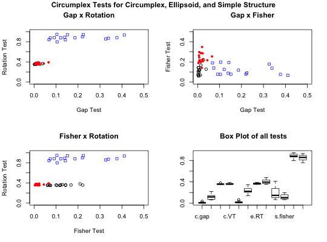

Rotations of factor analysis and principal components analysis solutions typically try to represent correlation matrices as simple structured. An alternative structure, appealing to some, is a circumplex structure where the variables are uniformly spaced on the perimeter of a circle in a two dimensional space. Generating these data is straightforward, and is useful for exploring alternative solutions to affect and personality structure.
simulation.circ(samplesize=c(100,200,400,800), numberofvariables=c(16,32,48,72)) circ.sim.plot(x.df)
| samplesize | a vector of sample sizes to simulate |
|---|---|
| numberofvariables | vector of the number of variables to simulate |
| x.df | A data frame resulting from |
``A common model for representing psychological data is simple structure (Thurstone, 1947). According to one common interpretation, data are simple structured when items or scales have non-zero factor loadings on one and only one factor (Revelle & Rocklin, 1979). Despite the commonplace application of simple structure, some psychological models are defined by a lack of simple structure. Circumplexes (Guttman, 1954) are one kind of model in which simple structure is lacking.
``A number of elementary requirements can be teased out of the idea of circumplex structure. First, circumplex structure implies minimally that variables are interrelated; random noise does not a circumplex make. Second, circumplex structure implies that the domain in question is optimally represented by two and only two dimensions. Third, circumplex structure implies that variables do not group or clump along the two axes, as in simple structure, but rather that there are always interstitial variables between any orthogonal pair of axes (Saucier, 1992). In the ideal case, this quality will be reflected in equal spacing of variables along the circumference of the circle (Gurtman, 1994; Wiggins, Steiger, & Gaelick, 1981). Fourth, circumplex structure implies that variables have a constant radius from the center of the circle, which implies that all variables have equal communality on the two circumplex dimensions (Fisher, 1997; Gurtman, 1994). Fifth, circumplex structure implies that all rotations are equally good representations of the domain (Conte & Plutchik, 1981; Larsen & Diener, 1992)." (Acton and Revelle, 2004)
Acton and Revelle reviewed the effectiveness of 10 tests of circumplex structure and found that four did a particularly good job of discriminating circumplex structure from simple structure, or circumplexes from ellipsoidal structures. Unfortunately, their work was done in Pascal and is not easily available. Here we release R code to do the four most useful tests:
The Gap test of equal spacing
Fisher's test of equality of axes
A test of indifference to Rotation
A test of equal Variance of squared factor loadings across arbitrary rotations.
Included in this set of functions are simple procedure to generate circumplex structured or simple structured data, the four test statistics, and a simple simulation showing the effectiveness of the four procedures.
circ.sim.plot compares the four tests for circumplex, ellipsoid and simple structure data as function of the number of variables and the sample size. What one can see from this plot is that although no one test is sufficient to discriminate these alternative structures, the set of four tests does a very good job of doing so. When testing a particular data set for structure, comparing the results of all four tests to the simulated data will give a good indication of the structural properties of the data.
A data.frame with simulation results for circumplex, ellipsoid, and simple structure data sets for each of the four tests.
Acton, G. S. and Revelle, W. (2004) Evaluation of Ten Psychometric Criteria for Circumplex Structure. Methods of Psychological Research Online, Vol. 9, No. 1 (formerly at http://www.dgps.de/fachgruppen/methoden/mpr-online/issue22/mpr110_10.pdf and now at http://personality-project.org/revelle/publications/acton.revelle.mpr110_10.pdf.
The simulations default values are for sample sizes of 100, 200, 400, and 800 cases, with 16, 32, 48 and 72 items.
See also circ.tests, sim.circ, sim.structural, sim.hierarchical
#not run demo <- simulation.circ() boxplot(demo[3:14])title("4 tests of Circumplex Structure",sub="Circumplex, Ellipsoid, Simple Structure")circ.sim.plot(demo[3:14]) #compare these results to real data